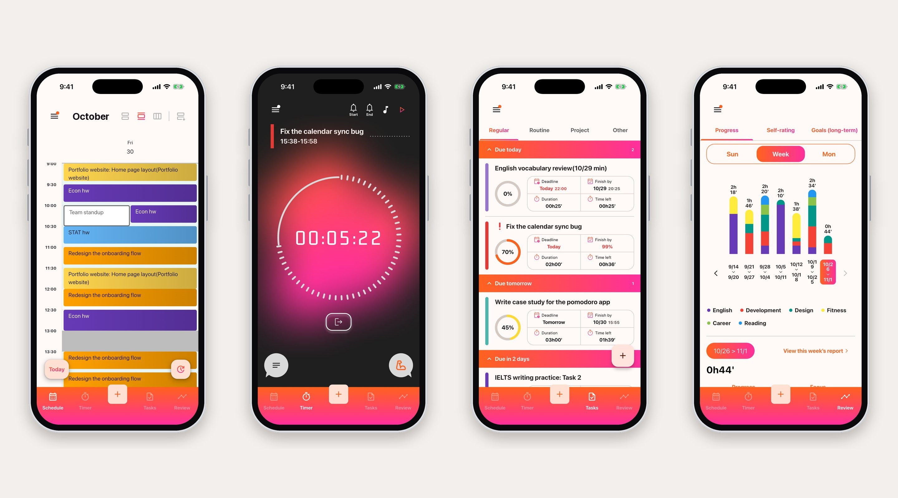
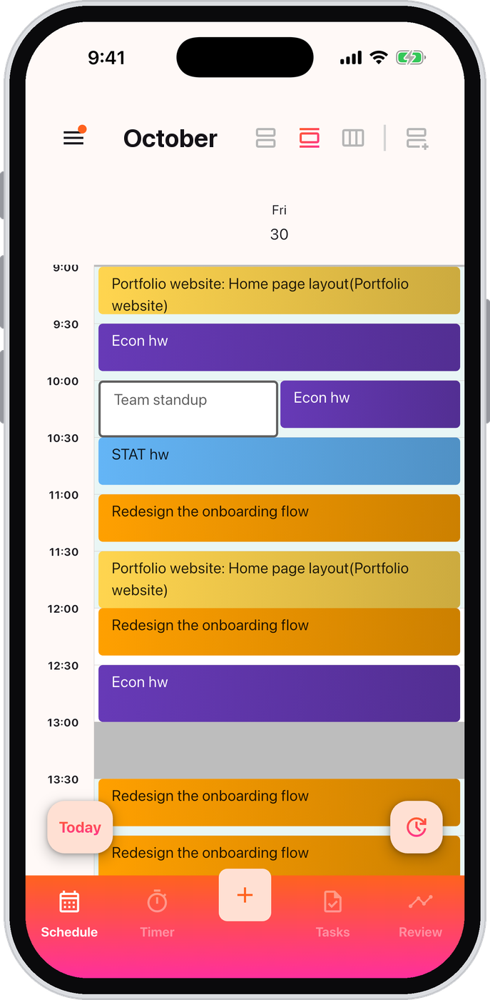
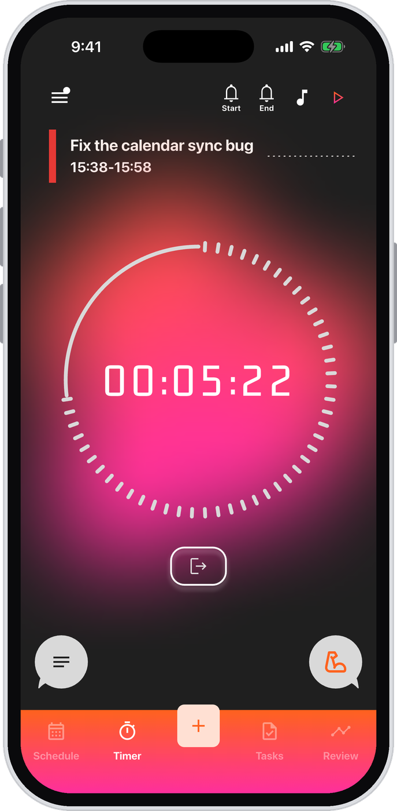
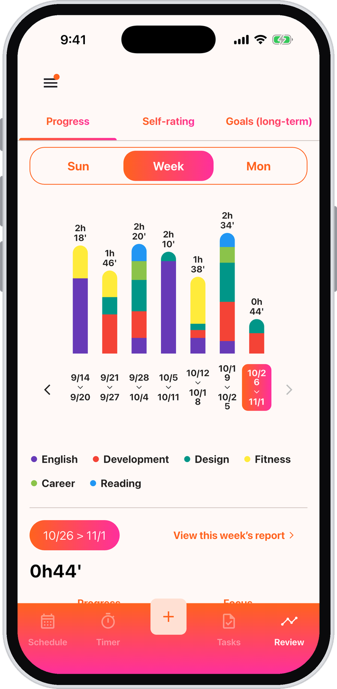

Built from 817 survey responses and 57 pieces of beta feedback, myPOMO plans your day so you can spend it working, not planning.
Problem
People have free time but can’t turn it into work. 85% of those we surveyed said so.
Solution
An app that builds your schedule from your free time, deadlines, how long each task will take, and its priority, then guides each focus session.
Outcome
Two national awards. 57 pieces of beta feedback are now shaping the app.
The Problem:
It's Not a Lack of Time. It's Not Using It.
In our pre-beta survey, most people said they have free time but can't turn it into work.
Where Time Slips Away
Procrastination — 88%
Most put tasks off until the deadline. 42 people named it their single biggest problem.
Plans That Don't Hold — 85%
Even after making a plan, people can't follow it.
Planning Itself — 63%
Many can't make a plan in the first place.
Who We Asked
Problem figures: pre-beta survey, first analysis n = 584 (working adults n = 132, Nov 2025). Total responses now 817. Occupation: 751 respondents; those planning to use myPOMO for someone else (a child, a student) were not shown this question.
Insight:
Planning Is the Burden
People don't fail for lack of time or motivation. They stall at deciding what to do and when.
01 Your free time
02 Your tasks
- Reading 1 h · due Thu · high
- Report 1.5 h · due Fri · medium
- Exam prep 1.5 h · due Mon · low
03 Your schedule
Design Response:
Take the Planning Off Their Hands
myPOMO builds the schedule automatically from your free time, deadlines, how long each task will take, and its priority, using the Pomodoro Technique. The app is one loop: plan, focus, reflect.

01 Plan · answers “Planning itself”Schedules That Build Themselves
Enter each task once, with its deadline, estimated time, and priority. myPOMO fits them into your free time and reschedules when plans change.

02 Focus · answers “Procrastination”A Timer That Keeps You in Focus
Pomodoro sessions with clear starts and breaks, showing what comes next so there is nothing to decide.

03 Reflect · answers “Plans that don't hold”Reports That Close the Loop
Daily and weekly reports show what you achieved, and a short review sets up tomorrow.
Process:
Ask, Build, Listen, Redesign
Each version started from what users told us. A sign-up survey found the problem, a beta tested the core idea, and beta feedback keeps reshaping the app.
responses to the beta sign-up survey, on where people struggle
tested auto-scheduling + focus timer
requests and bug reports from users
improving the app from that feedback, ongoing
From Feedback to Design
Outcome & Next:
Recognized Nationally. Now Proving It Works.
Awards
National Grand Prix, National PC Olympiad 2022, and 3rd Place, Teen Apps Awards 2023. Both are national app development contests for high school students.
What I Learned
An app has to do two things at once: offer the features people need, and stay intuitive enough to use in as few steps as possible. Holding both together matters as much as either one.
Next
After launch, a follow-up survey will test the core claim: do users start tasks earlier and use more of their free time?